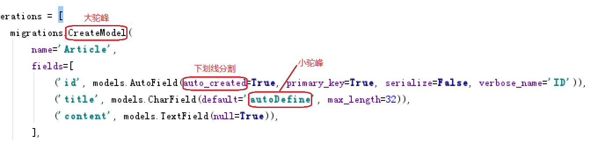
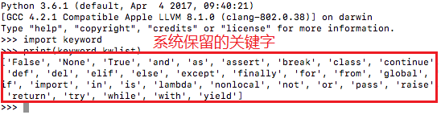

常用命名方式
不管是文件，变量，函数或类名等等，命名都要遵守一个基本规范，就是，命名要有意义，易读易懂。因此，两种主流的命名方式出现了，他们分别是驼峰命名方法 和 使用下划线分隔的方式
驼峰命名
驼峰命名法还细分为两种：
1.小驼峰式命名法
第一个单词首字母小写，之后的单词首字母大写，例如：userInfo、goodsList、articleList
2.大驼峰式命名法
每个单词的首字母都使用大写字母，例如：UserCenter、DataInfo
下划线分隔命名
就是使用下划线_连接所有的单词，以便区分。如：
user_info 和 data_list
图解

关键字
关键字就是一些具有特殊功能的标识符。在这里关键字指的是系统已经使用了的标识符，那么系统一般是不允许我们使用跟这些关键字同名的标识符的。
查看系统保留关键字的方法：
在命令行输入 import keyword 回车后输入 print(keyword.kwlist) 即可查看。
目前系统保留关键字有：

创建Python文件
文件名称部分
1.可以使用英文，不要使用中文
2.可以使用数字，但是尽量不要全用数字
3.可以使用_或者-等部分字符分隔文件名
4.文件命名要有意义方便维护
5.变量命名要避免和系统使用的保留关键字冲突
文件后缀部分
Python不限制文件后缀名，但建议使用更标准的常用格式
常用文件后缀： .py .pyw
.pyw 格式是被设计来运行开发完成的纯图形界面程序的
但在开发纯图形界面程序的时候，你也可以暂时把 .pyw 改成 .py，方便运行时调出控制台的窗口，查看所有错误信息
如：

查看文件后缀的方法
win7
打开任意文件夹->组织选项->文件夹和搜索选项->查看选项卡->高级设置->取消"隐藏已知文件类型的扩展名"选项
win10
打开任意文件夹->查看选项卡->倒数第三列中第二个选项(文件扩展名)勾上去
练习
什么是标识符？什么是关键字？如何查看系统保留关键字？
分别用大驼峰、小驼峰、下划线分隔三种形式 给变量命名。